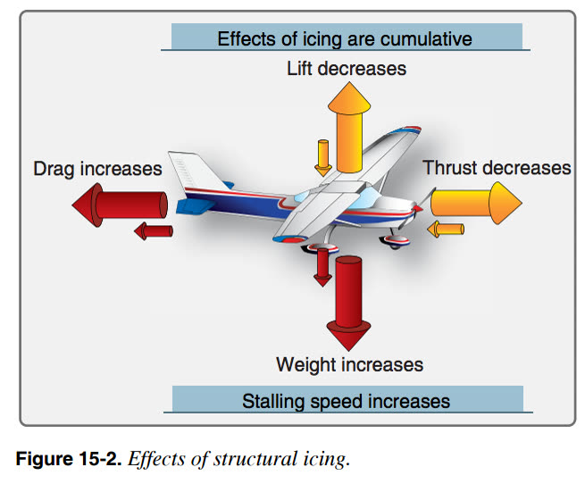

State the Clean Aircraft Concept and its regulatory basis.
List the critical surfaces that must be free of contamination.
Explain the aerodynamic effects of contamination on lift, drag, stall and control.

The effects of icing are cumulative: less lift and thrust, more drag and weight, higher stalling speed.
The rule
Clean Aircraft Concept
No one may take off in an aircraft with frost, ice, snow or slush adhering to the wings, control surfaces, propellers, engine inlets or other critical surfaces, except as specifically permitted by the AFM.
This principle appears in ICAO Annex 6, EASA Air Operations (CAT.OP.MPA.250), FAA 14 CFR 121.629 and the Domestic Airlines Operations Manual. There is no "small amount is acceptable" rule. The commander has the final responsibility for making sure the aircraft is clean.
Critical surfaces
Wings: upper and lower surfaces, leading-edge devices (slats), flaps and spoilers;
Horizontal and vertical stabilisers, elevators and rudder;
Ailerons and all other control surfaces, including their gaps and hinges;
Propellers, engine inlets and fan blades;
Upper fuselage on aircraft with rear-mounted engines (ice shed into the engines);
Air data probes and static ports, angle-of-attack vanes and ice detectors;
Landing gear, gear doors and fuel tank vents.
What contamination does
Research and accident investigations show that frost, ice or snow with roughness similar to medium or coarse sandpaper on the wing upper surface can:
reduce maximum lift by up to about 30 %;
increase drag by up to about 40 %;
reduce the stall angle of attack, so the wing stalls at a lower angle and a higher speed;
cause stall without warning, because stall warning systems are scheduled for a clean wing;
cause asymmetric lift and roll-off at or just after rotation;
restrict or jam control surfaces, and increase weight;
break off and damage engines, especially rear-mounted engines.
Illustrative only. Roughness no thicker than coarse sandpaper lowers maximum lift and the stall angle of attack. The aircraft can stall before the stall warning activates.
Why take-off is the critical moment
At rotation the aircraft is heavy, slow and pitching to a high angle of attack, close to the ground. This is exactly where contamination removes the safety margin. A contaminated aircraft may rotate normally and then fail to climb, roll uncommanded, or stall in ground effect before the stall warning activates.
Remember
Do not assume contamination will blow off during the take-off roll. Snow and frost that look loose may be frozen to the surface underneath.
Key takeaways
No frost, ice, snow or slush on critical surfaces at take-off — unless the AFM explicitly allows it.
Sandpaper-like roughness: up to ~30 % less lift and ~40 % more drag.
A contaminated wing can stall before the stall warning activates.
The commander has the final responsibility for a clean aircraft.
Knowledge check
Why might a contaminated wing stall without any stall warning?
The stall warning system is inhibited on the ground
Contamination lowers the stall angle of attack below the angle at which the warning is set for a clean wing
Anti-icing fluid blocks the angle-of-attack vanes
Stall warning only works with flaps retracted
Answer: B. Stall warning is scheduled for a clean wing. Contamination lowers the critical angle of attack, so the wing can stall before the warning angle is reached.
Training material only. It does not replace the Aircraft Flight Manual, FCOM, QRH, MEL or the Domestic Airlines Operations Manual, which always take precedence.